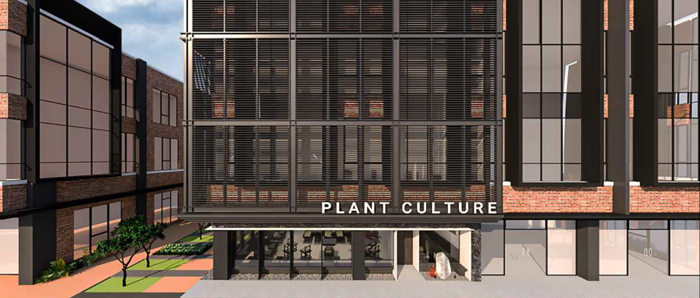

<section class="body-font">
  <div
    class="container mx-auto flex px-5 pb-24 items-center justify-center flex-col"
  >
    
    <div class="text-center lg:w-2/3 w-full flex flex-col items-center">
      
      <h1 class="title-font sm:text-4xl text-3xl mb-4 font-medium text-white font-Bli">
        Price for VIP Packges
      </h1>
      <p class="leading-relaxed mb-8 text-white">
        The menu page at Plant Culture showcases the diverse array of plant-based dishes available to patrons. 
        Each item on the menu is thoughtfully crafted to highlight the natural flavors and textures of plant-based ingredients. 
        From appetizers to entrees and desserts, the menu offers a variety of options to suit different tastes and dietary preferences. 
        Whether you're craving a refreshing salad, a hearty vegan burger, or a decadent dessert, 
        the menu at Plant Culture invites guests to explore the delicious possibilities of plant-based cuisine while supporting a sustainable and compassionate dining experience.
      </p>
      <div class="flex flex-col gap-5">
        
        
        
        
        
        
        
        
        
        
      </div>
      <p class="leading-relaxed mb-8 text-white mt-4">
        Thank you for exploring our menu filled with delicious and healthy options. 
        Visit our restaurant soon or contact us for online orders. 
        Enjoy the refreshing and beneficial vegetarian meals!
      </p>
      <a class="btn-book" href="/home/reservation">Book Table</a>
    </div>
  </div>
</section>
